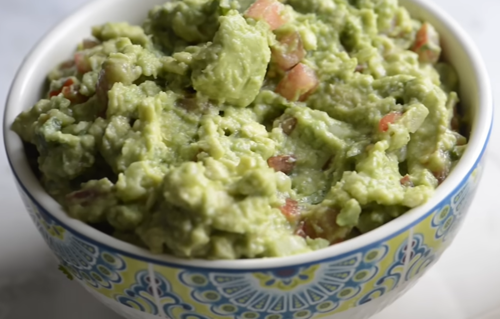

Guacamole

Beschreibung
Einfach Guacamole. Nicht von Mexikanern, also evtl. nicht authentisch 🤷♂️
Zutaten
Anleitung
- Zwiebel fein hacken. Inneres Tomatenfleisch mit Löffel aushöhlen. Es wird nur das äußere Tomatenfleisch benötigt und klein würfeln.
- Avocados halbieren und mit Messer in Kern schlagen
-> so lässt sich der Kern leicht raushebeln.
Avocado mit Löffel aushöhlen und in Schüssel geben.
Limettensaft hinzugeben und mit Gabel zerdrücken. Nicht so fein, weil man kleine Avocado-Stückchen schmecken will. - Zwiebel, Tomaten, gehackten Koriander hinzugeben und vermengen.
Mit Kümmel und Salz würzen. - Yeeha Muchacho 𐚁